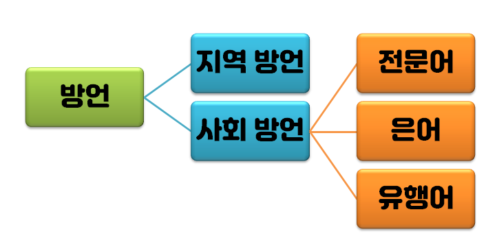

고유어와 한자어, 외래어
우리가 자주 먹는 과일 중 감은 고유어, 포도는 한자어(葡萄), 바나나는 외래어(banana)이다.
고유어와 한자어, 외래어에 대해 알아보자.
고유어(순우리말)
우리나라에서 예전부터 사용해 오던 말
요즘은 한자어나 외래어를 많이 사용해 점점 사라지고 있다.
그 예시로, 숫자를 쓸 때 100(일백 백 百)은 고유어로 '온', 1000(일천 천 千)은 고유어로 '즈믄' 등이 있다.
엄마, 아빠가 고유어이고, 숫자를 셀 때 사용하는 하나, 둘, 셋, 넷 등이 있다.
한자어
한자를 바탕으로 만들어진 말
한자는 뜻 글자이기 때문에 많은 뜻을 압축적으로 표현하기 좋다.
길 가는 사람->행인, 숫자를 배우는 학문->수학 등이 있다.
외래어
외국에서 들어온 말
요즘에 사용하는 외래어는 주로 서양에서 들어왔지만(엘리베이터->elevator, 라디오->radio) 외래어가 들어오는 방면은 다양하다.(마누라->эхнэр 같은 경우는 몽골어이다.)
+Plus
외국어와 외래어의 차이점
외국어 - 우리 나라의 말로 바꿀 수 있다.(스커트->치마 등)
외래어 - 우리 나라의 말로 바꿀 수 없다.(버스, 바나나 등)
방언
주변 방傍, 말씀 언言으로, 중심이 되는 언어 표준어가 아닌, 소수가 사용하는 말.
방언을 사용함으로써 소속감을 느낄 수 있지만, 반대로 방언을 모르는 사람들끼리는 말이 안 통할 수도 있다.

지역 방언
지역마다 다르게 사용하는 방언. 아래 그림을 보면 똑같이 '부추'를 지칭하는 말인데도 지역별로 다른 것을 볼 수 있다.

사회 방언
전문어
법조문, 컴퓨터 언어, 영화 촬영 기법 등 일반적인 용어가 아닌 전문적인 분야에서 쓰이는 말
특성 : 주로 많은 의미를 담고 있어야 하게 때문에 고유어가 아닌 한자어, 외래어가 많다.
한자어:통사론적(이다)[법조문], 외래어:Hyper Text Markup language(HTML)[컴퓨터 언어]
장점 : 복잡하고 어려운 의견이나 생각을 간결하고 명확하게 전달할 수 있다. 또, 동음이의어가 적어 뜻을 혼동하지 않을 수 있게 된다.
단점 : 일반적인 상황에서 전문 용어를 사용하면, 이해하지 못하는 상황이 생길 수 있다.
은어
심마니, 범죄 조직 등에서 뜻을 숨기기 위해 사용하는 언어
특성 : 주로 비밀을 유지하다 보니 암호의 성격을 가진다. 이렇게 알려진 은어는 더이상 은어의 역할을 할 수 없다. 따라서 더 이상 은어라 부를 수 없다.
짭새(경찰), 무림(밥) 등
장점 : 강한 동료 의식과 결속력을 갖게 한다.
단점 : 은어를 모르는 사람은 소외되는 효과를 갖게 된다.
유행어
짧은 기간 동안 유행하는 언어
특성 : 대중매체를 통해 전파되는 경우가 많다.
명퇴(명예로운 퇴직), 칼퇴(칼같이 하는 퇴근), 어쩔티비(어쩌라고 가서 티비나 봐)
장점 : 공감대 형성, 친근한 관계를 유지 가능하다.
단점 : 은어와 마찬가지로 유행어를 모르면 소외될 수 있고, 유행어를 자주 사용하면 가벼운 사람처럼 보일 수 있다.